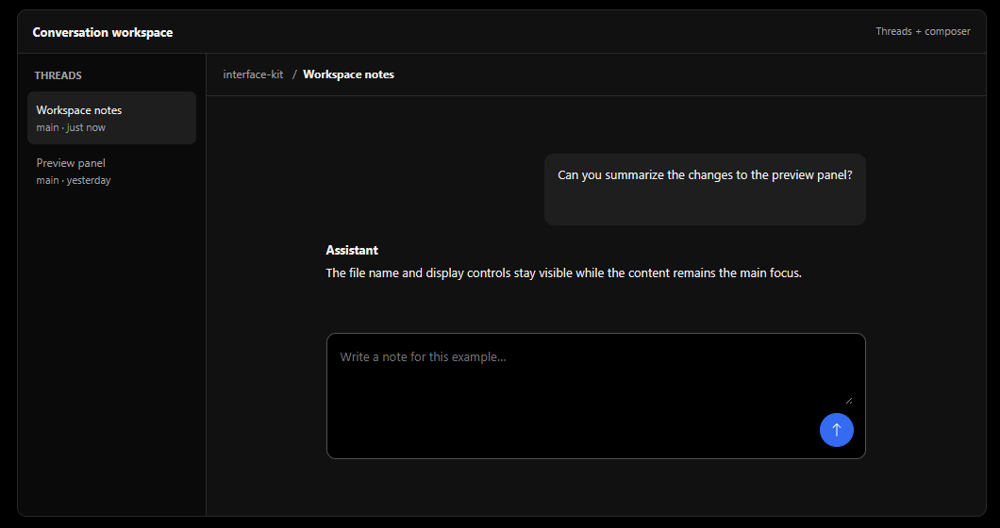
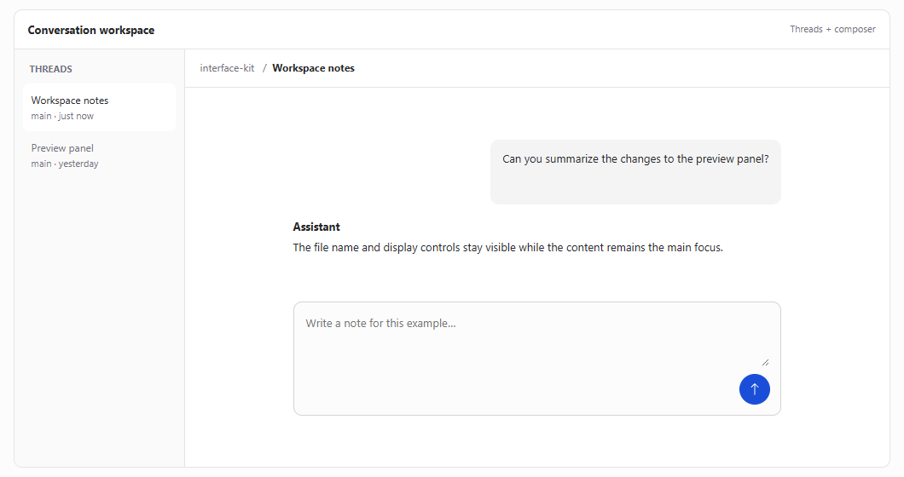

Two appearances
Light and dark themes keep the same hierarchy while adapting surfaces, text, and focus colors.
A practical design system inspired by T3 Code's default appearance—with a few small opinions of my own.

Quiet surfaces, compact controls, and a clear blue action. This system adapts the T3 Code look for general-purpose interfaces, with a clearer dark surface hierarchy and semantic status colors.
Light and dark themes keep the same hierarchy while adapting surfaces, text, and focus colors.
Blue signals action and focus. Green, violet, amber, and red give labeled states a consistent role.
Components, code styles, file previews, and layout examples bring the foundations into context.
Two views of the same conversation workspace. The examples show how navigation, content, and controls fit together across appearances.

This is an independent project based on the default theme of T3 Code. It was reconstructed from version 0.1.8 and adds my own choices for hierarchy and consistency. It isn't an official T3 Code project or a pixel-perfect specification.